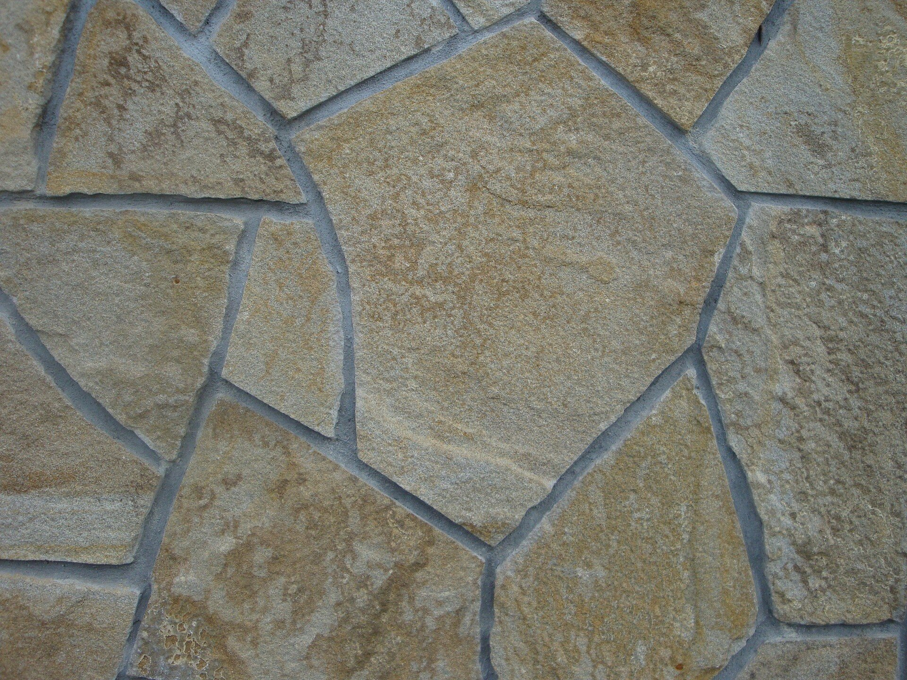

Ez a weboldal segíti önt abba, hogy hogyan is, és miből is valósítsa meg a kertjét úgy, hogy még a költségekről is lesz szó.
Jól megtervezett utainkon biztos lépésekkel és tiszta lábbal juthatunk A pontból B pontba. Az utak vonalvezetésével, szélességével, anyaguk minőségével és színével, valamint felületük struktúrájával az egész kert arculatát meghatározhatjuk. Túlzásba azonban ne essünk: a túl sok út rendezetlen hatásúvá teszi a kertet.
A szilárd burkolatú utak fő feladata, hogy összekössék a kerten keresztül az utcát a házzal, a kert különböző részeit, létesítményeit egymással és a házzal, és végül a növényágyásokat vagy a pázsitfelületeket lezárják, illetve elválasszák. Az utak nélküli kertben, főleg homoktalajokon, gyakran zavaróan hiányzik valami, ami a kert egyes részeit elkülöníti, tagolja, ami rendezetté teszi. Az utak egyenes vonalai világossá, áttekinthetővé teszik a kertet, ívelt vonalvezetésükkel sétára invitálnak, de pusztán praktikus célokat is szolgálhatnak. Anélkül határolják el a kert különböző részeit, hogy teljesen elválasztanák őket egymástól. Az utak hozzájárulnak a kert jellegének kialakításához. A burkolatok, amelyeken a fű keresztülnőhet - mint például a lyukas pázsitbeton járólapok vagy a széles fugával rakott kövek - szintén használhatók, és egyéni megoldást jelenthetnek. Természetesen figyelembe kell vennünk, mennyire biztonságosak esőben, hóban vagy fagy esetén, emellett kert lejtése és a kövek felületének tapadóképessége is meghatározza választásunkat. Az egész évben használt házbejárati utak esetén ezek különösen fontos szempontok, de a kert többi részének megtervezésekkor nem olyan lényegesek.
Az út szélessége:
az utak szélességére és emelkedésére bizonyos normák alakultak ki, amelyeket a tervezés során ajánlatos figyelembe venni. A normál járdák szélessége természetesen attól függ, hány ember megy rajtuk egymás mellett. Hogy viszonylag kényelmesen tudjunk rajtulk járni, egy személyre 40-60 cm szélességű utat számítsunk, két személyre 120, három személyre 180 cm-t. Ha csak ruhát akasztani vagy fűszernővényt szedni megyünk, biztosan elég a lépcsőkövekkel kirakott út is. De folyamatosan ki kell építenünk kövekkel az utat, ha például talicskát is akarunk rajta tolni. Emellett a kert nagysága sem elhanyagolható szempont. Ha kicsi a kert, az utak is keskenyek legyenek benne. Az autók számára 230 cm széles és 500 cm hosszú parkolóhelyet számítsunk. A hosszból elég 450 cm-t burkolattal ellátni, a maradék rész a kocsi első kerekei előtt van, ami nem igényel szilárd burkolatot. Ha több leálló hely van egymás mellett, a behajtóút legalább 600 cm széles legyen, hogy a be- és kiszállás kényelmes és biztonságos legyen. Csak akkor lehet az utat keskenyebbre méretezni, ha a beállóhelyek 230 cm-nél szélesebbek.Lejtés:
a szabadban a csapadékvizet a szilárd burkolatú útról valamilyen irányban el kell vezetni még akkor is, ha a járófelületet nedvszívó anyaggal (sóderrel, kőzúzalékkal, kavicságyazattal) borítjuk, hogy ne keletkezzenek rajta tócsák, télen pedig sima, jeges felületek. Ha az út hosszában lejt, az alján összegyült vizet el kell vezetni. Ha a lejtés kisebb, mint 1%-azaz 1 méteren 1 cm a magasságkülönbség-, az nem elegendő, a víz nem fog lefolyni az útról. Ha a lejtés 7%-nál nagyobb, lépcsőket kell betervezni.Ha kocsiutat építünk erős emelkedőn, ügyeljünk a kiegyenlítő szakaszokra, hogy a kocsi ne ütközzön a burkolatba a lejtő végén bagy elején. A kocsiút hosszanti lejtése maximum 15% lehet, de 10%-nál nagyobbat lehetőleg ne tervezzünk. Ha nincs hosszanti lejtés, legalább 2%-os keresztirányú lejtést kell adni az útnak, hogy a csapadék le tudjon folyni róla, és a talajba tudjon szivárogni. Ezért is kell az út felületének a terep szintjével egyezően állnia, hogy a víz lefolyhasson róla. Ha az útszegélyt magasabbra építjük, a víz elvezetésére a legmélyebb pontokon külön csatornákra lesz szükség, amennyiben a helyi rendelkezések értelmében a magánterületekről nem szabad a vizet a közterületre engedni.
Még a legkisebb kertben is szükségünk van olyan helyekre, ahol pihenhetünk, kikapcsolódhatunk, ünnepelhetünk, álmodozhatunk és néha még dolgozhatunk is, hogy az év minden szakában élvezni tudjuk a kert nyújtotta előnyöket.
A pihenőhely nemcsak sík felület, hanem térbeli egység is, amely ha minden oldalról nyitott, nem biztos, hogy ideális. Valamilyen védelemnek lennie kell, mert az biztonságérzetet ad, és az esetleges erős szél ellen is véd. Egy szorosan a ház mellé telepített pihenőhelyen a ház fala, egy épületsarok, magas falak, sűrű léckerítés, betekintés ellen védő sövény vagy virágrács, lugas ezért nagyon fontos elem. A tetőszerkezet vagy a védőfalak tehát a pihenőhely meghatározó elemei, melyek a használat minőségi lehetőségeit határozottan emelik.
FAL: átlátható transparenselem-például élő sövény-általában elegendő, ha a szomszéd telek távolabra esik. Közeli területek elválasztására azonban zárt falakra van szükség. Különösen a jó hangszigetelő tulajdonságú, átláthatatlan falak például a sorházak erkélyeinek, teraszainak elválasztására lehetnek nagyon előnyösek, ahol a távolságok nagyon kicsik. A falak magasságára, minőségére, milyenségére vonatkozó előírások, rendeletek eltérőek, ezért érdemes a szomszédokkal még a tervezés időszakában egyeztetnünk, és a helyi jogszabályokról tájékozodnunk.
TETŐ: Gyakran adottak bizonyos építészeti elemek-például erkélyek, ereszek-, amelyek az alájuk telepített pihenőhelynek védelmet adnak az időjárási viszontalanságok ellen. Ha bármilyen ok miatt nem tudunk állandó fedelet építeni az ülőrész fölé, a mobil eszközök-markízok, napernyők, sátorponyvák-is megteszik. Természetesen ide kell sorolnunk az olyan transzparens elemeket is, mint amilyenek a virágrácsok, lugasok, magas fák koronája.
2. lépés: Előkészületek1. Pihenőhelyek közvetlenűl a ház mellett. A közvetlenül a ház kertkijárata mellé épített pihenőhely a leggyakoribb megoldás; független a kert nagyságától. A ház közelsége rugalmas használatot tesz lehetővé. Könnyen megközelítető és védelmet nyújt például az eső ellen. Ha az épület homlokzata bizonyos szögben megtörik, vagy loggia áll rendelkezésre, a védelem eleve adott. Ezek az adottságok azonban meghatározzák a használható terület nagyságát. A kertet azonban csak az egyik oldal felől élvezhetjük, a kilátás mindig ugyanarra irányúl.
2. A háztól távolabbi pihenőhelyek. Gyakran találkozunk olyan körülményekkel, amelyek lehetővé teszik, hogy a pihenőhelyet ne közvetlenül a ház kerti bejárata mellé telepítsük, vagy építsünk egy másodikat a háztól valamivel távolabb. Az ilyen elgondolások oka lehet, ha oéldául a terep nem biztosít megfelelő helyet a ház közelében. A ház és a pihenőhely közötti távolságot-feltételezve, hogy az építészeti megoldás megfelelő (ami azt jelenti, hogy lépcsők nélkül és védetten járható be)-egyáltalán nem kell hátrányosnak tekinteni.
3. Pihenőhelyek messze a kert belsejében. A rendelkezésre álló kert telületét sokkal jobban ki tudjuk használni, ha a pihenőhelyet a háztól távolabb hejezzük el. Még a sorházak kertjében is teljesen új perspektívát ad a házzal ellentétes oldalon kialakított pihenőhely. Kis kertek ezáltal nagyobb térbeli mélységet kapnak. Kezdetben megfelel egy egyszerű pad is ülőhelynek, mert évekbe telik, amíg a növényzet annyira megnő, hogy védelmet adjon. A kilátás innen egészen más, mint a ház mellől, s ezt még kihangsúlyozhatjuk eltérő növényzet telepítésével, kis kerti tóval vagy hasonlókkal. A házhoz fiszonyított átlós elhelyezés olykor zavaró lehet. A házzal összekötő út másodlagos, megteszi például a kaszált gyep, pázsitbeton kockák vagy talajba süllyesztett lépcsőkövek is.
4. Több pihenőhely különböző távolságban. Ha a kert nagysága és alakja lehetővé teszi, az összes eddigi bemutatott megoldást megvalósíthatjuk benne. Ezáltal a kert elrendezését különbözőképpen láthatjuk, és az égtáji elrendezést is szabadon választhatjuk attól függően, hogy melyik évszakban járunk. A fény és árnyék aránya is más az egyes részeken. Természetesen nem kell az összes helyet egyszerre megépíteni, különösen, ha a határoló növényzet még fejletlen, de a tervezés során az összes kínálkozó lehetőséget szem előtt kell tartani.
Pihenőhelyek beillesztése lejtős kertekbe Amíg az eddig tárgyalt példák sík területre vonatkoztak, ahol a ház ls a kert szintje azonos, és viszonylag nagy változatosságot engedtek meg, addig a hegyi terepen a helyzet egészen más.
A terep közvetlenül a ház falától meredeken emelkedhet vagy erősen lejthet. Ilyenkor természetesen jobb a pihenőhelyet a háztól valamivel távolabb, ott berendezni, ahol megfelelően nagy sík terület kínálkozik. De esetenként még ez sem lehetséges, és a házhoz közeli elhelyezésről le kell mondani. További nehézséget jelentkeznek, ha a ház kijárata a kert szintjénél magasabban helyezkedik ek. Ilyen esetben gyakran találkozunk a magasított lábazatra épített házaknál. Így alakulnak ki a három oldalról magas földtorlaszokra telepített teraszok, verandák. A kellemes közérzethez elengedhetettlen térbeli kapcsolat itt hiányzik, az ember úgy érzi magát, mintha valami kiallítási vitrinben ülne. Ha ezután még bokrokból álló optikai védelmet célzó sövényt is telepítenek, a tér keménytelenül beszűkűl, komorrá válik, és a kert többi részére még rálátás sincsen. Ennek elkerülésére szabadon kell engednünk ötleteinknek. Minnél nehezebbek a feltételek, annál intenzívebben kell foglalkoznunk a megoldással, és a különböző megoldásokat gondolatban, a terv szintjén kell kipróbálni. Ha a terveinket nem rajzoljuk le és nem próbálgatjuk az elmélet szintjén, a gyakorlatban már át kell építenünk esetleg többször is mindent, ami költséges és munkaigényesebb is.
1. magasan fekvő pihenőhelyek Ez a helyzet szinte mindig egy olyan épülettel való csatlakozásból ered, amely kiemelkedik az eredeti terepszintből, de az ott lakók szeretnének egy kerti kijárót, amelynek eléréséhez nem kell lépcsőzni. Azért, hogy a szükséges földmunkákat csökkentsük, valamint már említett "kirakatba helyezés" érzését csökkentsük, a területet át kell rendeznünk. Ha kevés hely áll rendelkezésünkre, alkalmazhatunk támfalat, amely a székek magasságában végződik, és keretezi a pihenőhelyet, így a védettség érzését adja, aszimetrikus kivitele miatt pedig optikailag megnyugtató módon csatlakozik a házhoz. Ennek alternatívája lehet egy szélesen elnyújtott, enyhén lejtős terep kialakítása, de ehhez a megoldáshoz több hely szükséges.
2. Mélyen fekvő pihenőhelyek Mint a magasan fekvő pihenőhelyeknél, az alap itt is a ház bejárata és a terep közötti magasságkülönbség. Itt azonban hiányzik annak leheztősége, hogy szintben alakítsunk ki pihenőhelyet a ház bejárata mellett, legtöbbször azért, mert kevés a hely a szükséges feltöltéshez. A terep adottságai pedig arra kényszerítenek, hogy a ház mellett csak kis teraszt alakítsunk ki, egy mélyebb szinten viszont elegendő hely áll rendelkezésre egy nagyobb pihenőhely kialakításához. Ugyanezt találjuk annál a háznál, amelynek erkélyéről lépcső vezet a kertbe. Ott lent, az eredeti terepszinten, egy sövénytől keretezett, nagyobb helyen rendezkedhetünk be. Természetesen ezek egyike sem optimáli smegoldás. A terep ismeretében azonban arra kell törekedni, hogy a legjobbat hozzuk ki az adott lehetőségekből.
3. Több különböző szintre épített pihenőhelyek A jól megépített házaknak a lejtős területen több kijáratuk is van, amelyek a terep és a ház szintjeinek különböző magasságában nyílnak a kertbe. Ez jó lehetőséget teremt arra, hogy több, különböző szintben elhelyezett pihenőhelyet létesítsünk a kertben. Lépcsők és támfalak segítségével kialakíthatók olyan lapos területek, amelyeken ez meg is valósítható. És ha ez esetleg nem is olcsó, megéri, hogy áldozzunk rá, már csak a kert virágos részeinek jobb megközelíthetősége miatt is. A példánkban szereplő sarokházban a földszinti kijárat mellé épített ülőhely felül van, ezt lépcsők és támfalak kötik össze a nála 2,7 méterrel mélyebben fekvő, a kerti kijáró melletti terasszal. A lépcső fordulójába egy további kis pihenőt lehetett beépíteni, amelyről szép kilátás nyílik a környékre.
Miután megismerkedtünk a kerti utak és pihenőhelyek tervezésének, kialakításának és létesítésének alapjaival, és a kertben megfelelő helyeket kiszemeltük, még el kell döntenünk, hogy milyen burkolatot fogunk használni.
Már az ötletek felvetése során is fontos szerepet szánunk a burkolóanyagokkal kapcsolatos ismereteknek, most azonban konkretizálni kell az elképzeléseket. Az eddigi tervezés szintjén külön kezelt két témánk, az utak és a pihenőhelyek, most megint együtt tárgyalható, mert mindkettőhöz elvben ugyanazokat az anyagokat használhatjuk. Azonban az utak és pihenőhelyek alapfunkciói eltérőek, ezért a végső döntést a különböző feltételeknek megfelelően kell meghoznunk. Sokszor az azonos anyagokból is igen nagy választék színben, nagyságban, amít természetesen a tervezéskor érdemes figyelembe venni. Az optimális szerkezetű, mintázatú és színű (megfizethető árú) köveket a legkönnyebben így választhatjuk ki. Először is bemutatjuk a legközismertebb burkolóanyagokat, valamint azt, hogy ezek miben is különböznek egymástól. A következőkben kitérünk olyan technikai és esztétikai szempontokra, melyeket a választáskor érdemes figyelembe kell venni. A legtöbb lehetőség a keskeny fugával szegélyezett szilárd burkolatban rejlik. ide tartoznak a burkolólapok, a természetes kő, beton vagy égetett agyag kockakövek, illetve a faelemek. A természetes kövek a legértékesebb, legdrágább burkolóelemek. Már említettük, milyen nagy választék áll rendelkezésünkre; érdemes azonban a fagyállóság és a tartóság szempontjából is vizsgálni ezeket a burkolóanyagokat, és máris szűkíthetjük a szóba jöhető megoldásokat. A legkeményebb anyagok a vulkáni kőzetek, például a gránit, a pofír, a gneisz és a kvarcit. Ezek színe a világosszürkétől a vörösesszürkén át a feketéig terjed; a mintázat lehet szürke vagy zöldesszürke. A porfírnál a barnásvörös szín dominál. Az üledékes kőzetek-mint például a mészkő, a travertin, a homokkövek-jellemzője a réteges szerkezet. A mészkő szürkés, esetleg kékes, néha sárgás árnyalatú, a travertin többnyire sárgásbarna. Mindkettő ellenáll a hideg időjárásnak. A homokkő színe a világossárgától a sárgászöldön és barnásvörösön keresztül a szürkéig terjed. Hogy mennyire málik a homokkő, az a kötőanyagától függ. A legtartósabbak a szilikát kötőanyag-tartalmú homokkövek. Az erősen porózus homokkövek télen a nagyobb vízfelvétel miatt ki vannak téve a szétfagyás veszélyének.
A természetes kőlapokat simára fűrészelik vagy durván sík felületűre pattintják. A kereskedelemben négyszögletesre, egyenes szélűre vagy szabálytalan alakúra (ennek neve poligonális) vágva kaphatóak. A szabályos alakúak lehetnek készre vágottak 30-80 cm élmérettel, vagy úgy nevezett szallagban árusítják őket; ez utóbbiak szélessége állandó, a lapok hossza azonban változó. A poligonális köveket a helyszínen kell alakra vágni, vésni. Ennél a kőféleségnél a hulladékra 20-30%-ot kell számítani a rendeléskor. Ezek előnye az alacsonyabb ár, amit viszont a lerakáshoz szükséges több munka bére egyensúlyoz. Bármilyen követ veszünk, a lapok nagysága ne legyen 40x40 cm-nél kisebb, hogy lerakés után szilárdan álljanak. A lapok vastagsága általában 4-6 cm a homokágyba lerakához.
Betonlapokat nagyon sokféle formában, alakban, színben, méretben és különböző felszínnel hoznak forgalomba. E lapok olcsóbbak a természetes köveknél, és ha az anyag jó minőségű, akkor időtállók is. Túlnyomó többségük szabályos négyszög vagy négzet alakban készül. A hatszögletű vagy kerek formák érdekes mintázatot adnak, de a szélek összeillesztése problémás. A szabványos nagyságok 40x40 cm, 40x60 cm vagy 50x50 cm. A lapok vastagsága 5 cm. A felületük legyen egyenes, sík és megfelelő tapadóképességű. A közönséges betonszíntől, amelyet különböző felületnemesítő eljárásokkal tudnak szépíteni, számos, természetes kövekkel készül, nemesített felületű lap is kapható. Ez utobbiak többnyire kétrétegű lapok, amelyek járófelületére legalább 1 cm vastag nemes réteget préseltek. etáltal az összes természetes kő színe beállítható, a jó tapadóképességet kőzuzalékkal érik el. Kimosásokkal vagy érdesítő eljárásokkal a felszín később még alakítható.

A faburkolatok anyaga négyzet vagy téglalap alakra vágott, többnyire azonban kereknek meghagyott, általában 10-15 cm magasra és 8-30 cm átmérőre vágott hasábfa. A fát alaposan impergálni kell használat előtt. Mivel a fa korong alakú vágásfelülete, a bütü van felül, látszik a fa erezete. Általában tölgyet és erdei fenyőt használnak faanyagként. Az impregnálás után a fa általában barnás vagy zöldes lesz. A tartósság azonban a kémiai impregnálás ellenére is korlátozott. Fűrészelt fa lehet négyszögletes famozaik vagy csempe, de lehet hosszú deszka is. Az anyagot, amely legtöbbször erdei vagy vörös fenyő, de egyébb fenyő is lehet, mindig impregnálni kell a nedvesség ellen. Az összes ilyen burkolat közös jellemzője, hogy a talaj fölött magasabbra kell építeni, hogy a fa hátoldala is képes legyen száradni. Kész lapokat is vehetünk 120x60 cm, 60x60 cm, de 100x50 cm és 50x50 cm méretben is. Készíthetünk azoban padlót hosszú, egymás mellé helyezett deszkából is. Ez talán elegánsabbnak tűnik, de vetemedéssel és száradási repedésekkel is számolnunk kell. Csak első osztályú, nagy teherbíró képességű fát használjunk! Egészséges törzsből való, ág és göcsmentes, nem repedezett és semmilyen penész jelét nem mutató fa alkalmas a munkához. A különböző kerámiaanyagokat bizonyára nagyon sikan szívesen használnák kertjükben az utak burkolására, hiszen ezek a szép, tarka mintás kerámiaburkolatok a mediterrán vidékek különös szépségét, egyedi hangulatát idézik fel. Sajnos ezek az anyagok a mi teleinket nem bírják ki. A nedvesség átszivárog a fugákon és az ágyazaton, ami az apró kövek miatt elkerülhetettlen. Mivel az egészet egy stabil és erős betonalapra kell építeni, a szivárgó víz nem tud a talajba ivódni, hanem megáll a beton fölött, és ha télen megfagy, megemeli a burkolatot, ami ezután alkotóelemeire esik szét.
A természetes vagy betonköveknek úgy lest "zöld fugája", hogy a köveket távolabb rakjuk egymástól; ezzel az egyszerű módszerrel elérhetjük, hogy a növényzet kinő a fugában, és a burkolat zőld lesz. Az alkalmazott kockakövekre az előbbi részekben leírtak érvényesek. A kövek nagysága azonban ne legyen 10 cm-nél kisebb, mert a fugák általában 3 cm szélesek, így a kövek nagyobb terhelés hatására instabillá válnak. A mintegy 16x16 cm méretű kövek a legjobbak. Műanyag vagy fa távolságtartókkal egyforma vastagságú fugákat képezhetünk ki, és a kövek azonnal stabilan állnak. Vannak kövek, amelyeket eleve távolságtartó fülekkel készítenek. Távolságtartók nélkül a köveket változó szélességű fugákkal is rakhatjuk, amivel különbözően átnőtt, változóan zöld átmeneteket nyerhetünk. A fugaként homokkal kevert termőföldbe tegyünk fűmagot!
A pázsitrácsos kövek vagy pázsitkövek olyan betonból készült, többnyire 30x50x10 cm mértű kövek, amelyek kisebb vagy nagyobb perforációjába földet teszünk, és ebbe pázsitmagot vetünk. Újabban készítenek ilyen - általában hatszögletű - lapokat újrahasznosítható műanyagokból is.
A házi kertbe a pázsittéglák gyakran jobban illenek, mint a pázsitkövek. Pázsittéglának nevezzük a sok kis jukkal készített, keményre égetett klinkertéglát. A tégla és a fű természetes egységbe olvad ezen a burkolaton. A téglák barnás színe nagyon jól illik a talaj színéhez. Ezek a téglák a mi éghajlatunkon fagyállóak.
Fuga nélküli szilárd burkolat a simított beton és aszfalt. A simított beton azt jelenti, hogy a betont kiöntés és tömörítés után saját levében elsimítják, majd végleges helyén hadják megszilárdulni. Így készül például az a beton, amit az autópályákról ismerünk. Az utcai aszfaltbevonatot mindenki ismeri. Az anyagot forrón hordják fel, és simára hengerlik. Egyik anyag sem alkalmas kiskerti felhasználásra, mert készítésük nagy technikai hátteret és megfelelő időjárást igényel.
Lágy, vizet áteresztő burkolatokEzeknél az anyagoknál egyáltalán nem számít az utak előre eltervezett volta: itt minden lehetséges! A kezeléssel járó munka ugyan - mindenek előtt pázsit esetén - több, ezt azonban egyensúlyozza az olcsó előállítás.

A pázsit az egyetlen járható vegetációs ferület. Ennek előfeltétele a nem túl laza talaj, amit megfelelő drénezéssel (alagcsövezéssel) is el tudunk érni. A rendszeres és gyakori kaszálással a füvek töve rövid és sűrű lesz, így jobban bírja a terhelést. Ha a talaj laza és képlékeny, megoldásként a kőpázsit, a dúrvább kőzúzalék belekeverése kínálkozik. Erre a célra mintegy 75% kőzúzalékból és 25% termőföldből üregmentes, tömör keveréket készítünk, és ezt mintegy 15 cm vastag rétegben terítjük a talajra, majd ebbe vetjük a fűmagot. A növények gyökerei a kövek közöttt a mélybe hatolnak, és szilárdan összetartják a keveréket, amelyben a kövek viselik a nyomést okozta terhelést. A kőpázsit az egyik legtartósabb, legellenálóbb zöldfelület, amely akár útnak is használható.
Szórt felületek sóder vagy kőzúzalék borítással
A kötőanyag nélküli burkolatok köré tartoznak, előállításuk egyszerű és olcsó. A hordozórétegre szórják fel a burkolóréteget, melyet víz hozzáadásával szilárdra döngölnek, hengerelnek. Ilyen burkolatokat készítenek 0/8 mm-es kavicshomok keverékéből vagy 0/11 mm-es homok-kőzuzalék keverékéből. A réteg vastagsága tömörített állapotban 2 cm. A kvaarckavics lehet gömbölyű (folyami kavics) vagy kőzuzalék is. A kőzuzalékok főleg mészkőből, lávából vagy gránitból készítik. A felhasznált kőanyagokból függően a burkolat színe változhat.
A fakéreg borítású utak alépítményére ugyanazok az előírások érvényesek, mint amit a kavicsra és a kőzuzalékra elmondtunk. Itt a fedőréteg durván felaprított, fakéreg. Így a szép barna, rugalmas és puha fedőréteg állítható elő. Sajnos a szerves anyag folyamatosan humusszá alakul, ezért az ilyen burkolatok esős időben iszapossá válnak, és a folyamatos bomlás miatt állandó felújítást ígényelnek. Ha a fakérget hordozóréteg nélkül szorjuk le, az út igen hamar használhatatlanná válik.
Mindenki, aki valamit építeni akar, előre szeretné tudni, mibe fog az egész kerülni. Csak így lehet mérlegelni, hogy milyen anyagok, megoldások jöhetnek számításba, és mi az, ami túl drága.
Miután a helyi körülményeknek és az igényeknek megfelelő tervet kidolgozunk, már biztos alappal rendelkezünk ahhoz, hogy az előállítási költségeket megbízhatóan ki tudjuk számolni. Miután az utakhoz és a pihenőhelyekhez gyakorlatilag ugyanazokat az anyagokat használjuk, a költségeket egyformán számolhatjuk mindkettőre. Első lépésként a mennyiségeket kell meghatároznunk. Ehhez a felületek alakját, méreteit leolvashatjuk a tervrajzról. Ha a burkolatokat szegélyeznünk kell, azt folyóméterben (fm) számoljuk. Minden anyagköltség, munkaigény (munkabér) ebből a három mennyiségből vezethető le: m2(négyzetméter), m3(köbméter), fm(folyóméter), amikor is a hordozóréteg négyzetméterben mért nagyságát a földmozgatáshoz köbméterbe számoljuk át, mert az könnyebben értelmezhető. A következő lépésben az építési költségeket kell megérdeklődni. A "valós" és "nem valós" költségek közötti jülönbség a saját kivitelezéssel elvégzett és a válalkozónak kiadott munkák költsége alapján kiszámított árakat jelenti.
Valós költségek: ha valaki a kertjébe tervezett utakat és pihenőheeelyeket nem maga akarja megépíteni, az forduljon a közelbe levő két vagy három kertépítő válalathoz, és kérjen tőlük árajánlatot. A cégek a tervben foglaltak alapján kiszámítják a szükséges anyagok mennyiségét, a szükséges munkát, és a részköltségeket összeadva kiszámítják a válalási árat. A különböző ajánlatok, alapján ki lehet választani a legkedvezőbbnek látszót, az egyes részösszegek a válalkozó számára kötelezőek.
A nem valós költségek: ha az utakat és pihenőket magunk akarjuk elkészíteni, csak az anyag- és a fuvarköltségeket kell számításba venni. Ezeket az árakat az építőanyag-telepen érdeklődhetjük meg.
2. lépés: A költségek kiszámításaTeljesen függetlenül attól, hogy a munkánkat magunk végezzük, vagy válalkozónak adjuk ki, meg kell különböztetnünk állandó és változó költségeket. Ezen kívül még számolni kell a technikából következő költségekkel is.